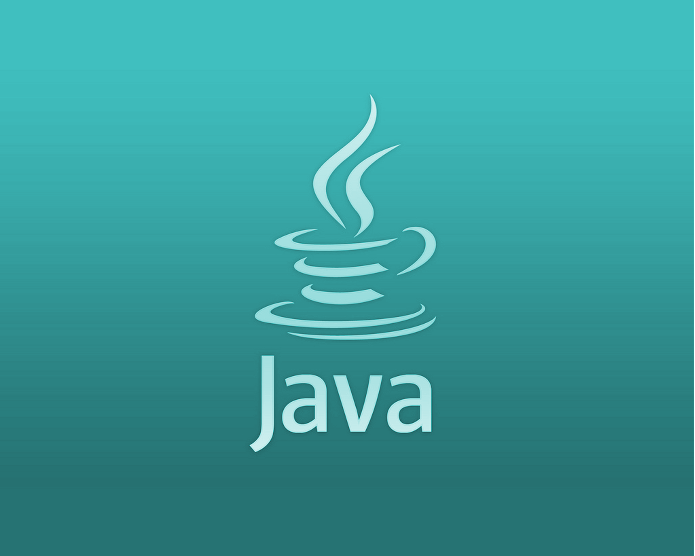
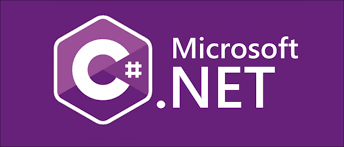

In today's rapidly changing digital world,it has become very normal to notice technologies surpassing each other frequently with regular updates & advancements.A career in technology needs sound knowledge of programming.But one should be aware of which language can get you the Jackpot. After a lot of hard work and research we bring you the top 5 languages in demand for the year 2021.
1.Python

One of the easiest languages to learn and in great demand. It is used to create web pages,bot,games. Python is also popular in AI programming and machine learning. As per the PYPL ranking report of the year 2021, python has surpassed java to become The most popular language. Python has been the favorite language of almost every individual who is just starting their career in the programming domain for the last many years. The primary reason behind this is a quite simple syntax that makes it easy to read, learn, and use. Python frameworks that make things more efficient & convenient are Django, Flask, Pyramid, etc.
2.Java
One of the biggest reasons why Java is so popular is the platform independence. Programs can run on several different types of computer; as long as the computer has a Java Runtime Environment (JRE) installed, a Java program can run on it. There are around 8 million JAVA developers across the world – maybe this number can help you to assess the demand & popularity of this particular language.The language is widely used in Android development along with Web Applications, Desktop Applications, Scientific Applications, etc. Also, top-notch companies like Adobe, Amazon, Flipkart, and many others are using JAVA and offering ravishing career opportunities to Java developers.
3.JavaScript

JavaScript is a well-known programming language on the internet. It's also known as the HTML programming language, and it's commonly used on the internet.At Octoverse also, JavaScript is enjoying the top position among all programming languages. Meanwhile, some of the renowned companies in the tech world that are using JavaScript are Facebook, Google, Microsoft, Uber, etc.
4.C#
For the last many years, C# is holding a good position in the list of top programming languages of almost every index. The language is ranked at 4th at PYPL index respectively. Alongside India, there are enormous career opportunities for C# developers in other countries.It is also suitable for those who want to develop computer games. You can create games on the Unity 3D engine if you study it.